O caso das ânforas da Guanabara
Em 1982, um mergulhador americano anunciou um naufrágio romano no Rio. Quarenta e quatro anos depois, três versões disputam o caso, e nenhuma delas tem prova suficiente.
Em outubro de 1982, o mergulhador americano Robert Marx anunciou no Rio de Janeiro ter encontrado, no fundo da baía de Guanabara, os restos de um navio antigo, provavelmente romano. Se confirmada, a descoberta colocaria navegadores do Mediterrâneo no Brasil mais de mil anos antes de Cabral. A notícia correu o mundo.
Nos anos seguintes, o caso envolveu a Marinha do Brasil, um leilão em Amsterdã, um mergulhador veterano que reivindicou as jarras como suas e uma nova lei federal. A pergunta principal ficou sem resposta. Quarenta e quatro anos depois, circulam duas versões opostas: a de que o Brasil escondeu uma descoberta histórica e a de que tudo não passou de uma brincadeira. Nenhuma delas tem prova suficiente.
Nenhum estudo acadêmico dedicado ao sítio foi localizado. O que existe são reportagens, livros de defensores de uma tese e textos de divulgação que repetem uns aos outros. Quase tudo o que se sabe vem de três lados, cada um com interesses próprios. Por isso, esta apostila apresenta o caso três vezes, na versão de cada parte, e depois examina o que as peças permitem afirmar.
- 1976. O mergulhador José Roberto Teixeira retira duas ânforas inteiras perto da Ilha do Governador.
- 1978. A revista Manchete publica "O mistério das ânforas gregas".
- 1979. Robert Marx começa a trabalhar no Brasil.
- 1981-82. A Marinha contrata uma firma brasileira e a empresa de Marx para explorar o naufrágio holandês Utrecht, na Bahia.
- Outubro de 1982. Marx anuncia o naufrágio antigo na Guanabara.
- Janeiro de 1983. Marx volta ao Brasil e afirma ter encontrado o sítio coberto.
- Abril de 1983. A Manchete publica "Ânforas são falsas", com a versão de Américo Santarelli.
- 1983 ou 1984. Um leilão em Amsterdã expõe peças de naufrágios do Brasil, e os contratos são suspensos.
- 1986. É sancionada a Lei 7.542, sobre bens afundados.
- 1989. A Revista da Armada, de Portugal, defende reabrir o caso com análise do barro.
- 2007. A especialista Elizabeth Will repete que não vê razão para considerar as peças modernas.
- 2019. Marx morre. Dois anos antes, ainda apresentava o naufrágio romano em palestra.
As jarras aparecem na imprensa brasileira antes da chegada de Marx ao país. A ideia de que ele as tenha plantado não tem base nas fontes. O que Marx fez foi transformar um enigma local em tese.
A Versão de Marx
O naufrágio romano, o sítio coberto e a acusação de que o Brasil quis proteger Cabral.
Robert Marx, entre o explorador e o caçador de tesouros
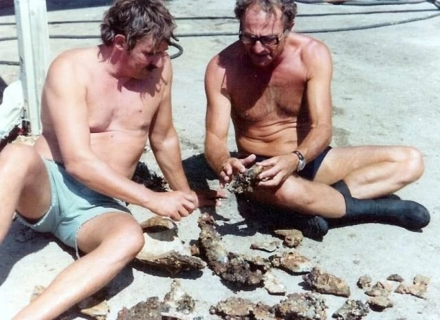
Robert Marx nasceu em Pittsburgh e entrou no Corpo de Fuzileiros Navais dos Estados Unidos aos 17 anos, onde se especializou em mergulho. Passou anos nos arquivos espanhóis estudando as frotas do tesouro e refez a viagem de Colombo numa réplica, o que lhe rendeu uma condecoração da Espanha e o título de "Sir". Escavou a cidade submersa de Port Royal, na Jamaica, encontrou o galeão Maravillas nas Bahamas e escreveu cerca de 60 livros.
Marx não tinha formação em arqueologia e dizia que isso não fazia diferença. Uma reportagem da UNESCO de 1997 registra que era chamado ao mesmo tempo de saqueador e de explorador mais importante da época. Ele admitia dividir os achados em 75% para si e 25% para o governo do país onde trabalhava. Sua arqueologia era também o seu negócio.
As jarras, a tese e o coral
Segundo o relato de Marx, pescadores da Guanabara retiravam jarras em suas redes havia anos. O New York Times registrou o apelido "Bay of Jars". Em 1976, José Roberto Teixeira trouxe duas peças inteiras, e a imprensa brasileira logo falou em gregos e fenícios. Muitos estudiosos desconfiaram de uma farsa em busca de manchete, e a investigação travou porque Teixeira só revelaria o local se participasse da expedição.
Marx afirma ter ouvido primeiro a explicação mais simples: as peças teriam sido trazidas muito depois e jogadas na água. Mudou de ideia em 1981, quando um pescador retirou um prato de estilo fenício várias centenas de milhas ao norte do Rio. Seu principal argumento passou a ser uma pergunta: por que alguém transportaria ânforas da Europa apenas para lançá-las ao mar?
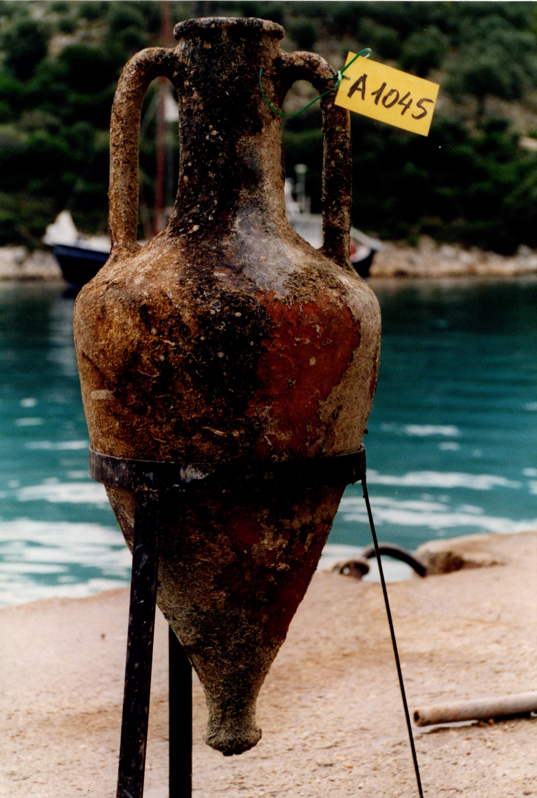
Em 1982, Marx mergulhou no local e descreveu uma área do tamanho de três quadras de tênis, com partes de cerca de 200 ânforas quebradas e algumas inteiras. Os cacos estariam cobertos por um coral que, segundo ele, já não crescia na baía poluída. Ao Christian Science Monitor, definiu o achado como um naufrágio antigo, "possivelmente fenício, mas provavelmente romano".
O material foi levado a Elizabeth Will, professora da Universidade de Massachusetts e especialista em ânforas romanas. Ela apontou semelhança com jarras produzidas em Kouass, no Marrocos, e sugeriu o século III d.C. Harold Edgerton, do MIT, teria explorado o local com sonar, e um teste de termoluminescência em Londres teria indicado uma data próxima de 19 a.C.
A acusação contra o Brasil
Em janeiro de 1983, Marx voltou para iniciar a escavação e afirmou ter encontrado o sítio sob um monte de sedimento novo. Segundo ele, funcionários disseram que os brasileiros não se importavam com o passado e não queriam substituir Cabral como descobridor.
A forma mais completa dessa acusação está no livro Ancient Ocean Crossings, de Stephen Jett, publicado em 2017. Jett afirma que Portugal e Espanha pressionaram o Brasil, que o embaixador italiano falou em cidadania para imigrantes e que uma draga despejou terra sobre o naufrágio.
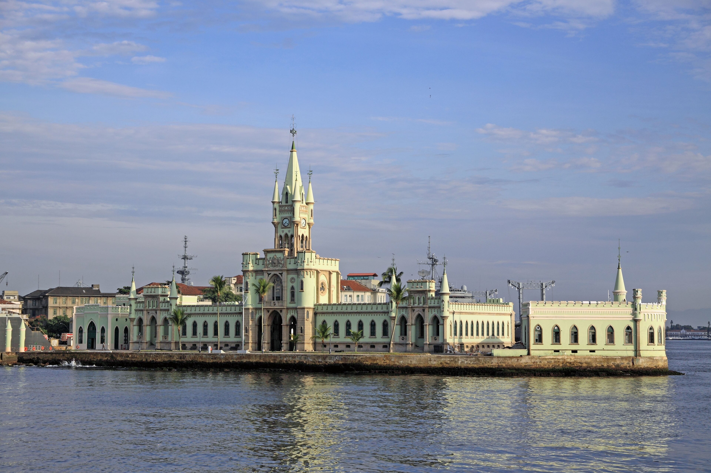
De onde vem essa história
Quase todos os detalhes dessa versão remontam ao próprio Marx. O Christian Science Monitor de 1982 deixa claro que é ele quem diz que Portugal reclamou. Não foram localizados documento diplomático, nota do governo ou declaração italiana sobre o assunto. O episódio pode ter ocorrido, mas hoje é testemunho de uma das partes.
Marx também não chegou ao caso sem uma tese. Buscava havia muito tempo provar que Colombo não fora o primeiro e publicou em 1992 um livro sobre "deuses brancos" nas Américas, ideia que atribui a estrangeiros feitos dos povos indígenas. A firma brasileira da qual era sócio se chamava Fenicia Pesquisas Arqueológicas.
A procura por fenícios no Brasil
A ideia é antiga no país. Em setembro de 1872, o Instituto Histórico do Rio recebeu uma carta de um certo Joaquim Alves da Costa, com a cópia de uma suposta inscrição fenícia achada "perto da Paraíba". A pedra nunca apareceu, e o remetente tampouco. Especialistas rejeitaram o texto já em 1873. Ladislau Netto, que o traduziu e divulgou, disse depois ter identificado o falsário sem revelar o nome, e o historiador Geraldo Joffily acusou o próprio Netto.
O caso voltou em 1968, quando Cyrus Gordon, da Universidade Brandeis, defendeu a autenticidade da inscrição, com ampla divulgação de Walter Sullivan no New York Times. Catorze anos depois, um Walter Sullivan assina no mesmo jornal a matéria sobre os achados de Marx, quase certamente a mesma pessoa. Somada à Pedra da Gávea e às cidades perdidas imaginadas no Império, a sequência revela um desejo persistente de encontrar um passado clássico no Brasil.
A Versão da Marinha
O paraíso dos caçadores de tesouro, o leilão de Amsterdã e a lei de 1986.
Um país sem barreiras
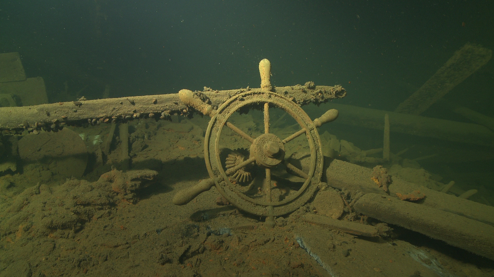
A arqueologia subaquática tornou-se disciplina científica nos anos 1960, quando arqueólogos aprenderam a mergulhar, e vários países fecharam as portas à exploração comercial de naufrágios. Segundo o arqueólogo Gilson Rambelli, os caçadores de tesouro encontraram no Brasil dos anos 1970 e do início dos 1980 um ambiente sem obstáculos. A arqueologia brasileira estava voltada para sítios pré-históricos em terra, o país vivia sob ditadura, e as autorizações cabiam à Marinha, sem tradição na área, e não ao IPHAN. O explorador podia ficar com 80% do que recuperasse.
Marx chegou nesse cenário, em 1979. O Brasil só entraria oficialmente na arqueologia subaquática acadêmica em 1993. Quando as jarras apareceram, praticamente não havia no país quem pudesse estudá-las com método.
As moedas do Utrecht
Na versão oficial, o problema não envolvia Cabral. Entre 1981 e 1982, um contrato da Marinha deu à brasileira SALVANAV e a uma empresa canadense de Marx o direito de explorar o Utrecht, navio holandês afundado na Bahia em 1648. A Marinha podia escolher 20% das peças para seus museus.
Pouco depois surgiu a notícia de um leilão da Christie's em Amsterdã com moedas holandesas raríssimas, cunhadas no Brasil em 1645 e 1646, sob suspeita de terem saído do país contra as regras do contrato. O episódio é registrado pela agência de patrimônio da Holanda. O Brasil suspendeu os contratos e começou a preparar a legislação que resultaria na Lei 7.542, de 1986.
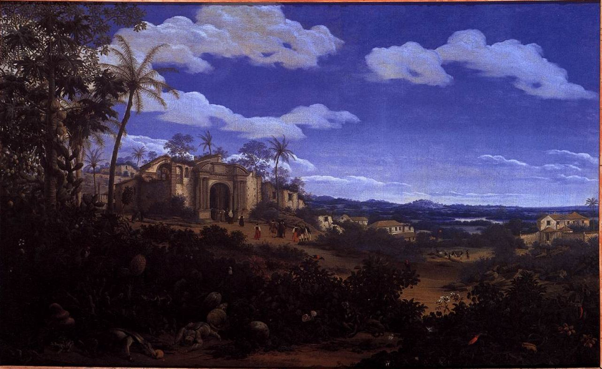
Segundo a reportagem do New York Times de 1985, conhecida aqui por trechos e recontos, a Marinha negou qualquer encobrimento e acusou Marx de contrabando, apresentando um catálogo de leilão. Procurado para responder, ele teria desligado o telefone. Para quem aceita essa versão, a história sobre Cabral foi apenas um desvio de assunto.
O que o leilão não explica
Essa versão tem mais sustentação documental, mas resolve menos do que parece. Um leilão suspeito explica a saída de Marx do Brasil. Não diz nada sobre as jarras da Guanabara, que estão em outro estado e em outro sítio.
A Marinha tampouco é parte neutra, já que autorizou esse tipo de exploração. As explicações atribuídas a ela não coincidem: um relato diz que o sítio foi coberto para evitar saques, outro diz que a Marinha negou tê-lo coberto, e um terceiro afirma que as peças seriam de uma caravela portuguesa do século XVI. Cobrir um sítio com sedimento é técnica real de preservação, o que torna a primeira explicação possível, mas não comprovada.
A proibição de toda a arqueologia subaquática também é exagero. As fontes dão datas diferentes para ela, e o registro holandês fala em suspensão de contratos. Em 1997, Rambelli ainda criticava a Marinha por seguir autorizando explorações sem projeto científico. Houve uma interrupção real, seguida de nova lei, e não um silêncio imposto para proteger Cabral.
A Versão de Santarelli
O recordista, as réplicas de 1961 e a explicação que encerrou o assunto sem resolvê-lo.
"Ânforas são falsas"
Em 9 de abril de 1983, a Manchete publicou uma terceira história, conhecida aqui por um artigo de 1989 da Revista da Armada, de Portugal, que resume a reportagem. O protagonista era Américo Santarelli, de 58 anos.
Segundo Santarelli, em 1960 ele encontrou no Mediterrâneo, a 55 metros de profundidade, dezenas de ânforas de um navio afundado e recuperou mais de vinte em perfeito estado, mas a lei italiana impediu que as trouxesse ao Brasil. Em 1961, para decorar a casa, encomendou réplicas a um oleiro português a partir de fotografias e as colocou no fundo da Guanabara para que ganhassem aspecto antigo, com a intenção de recolhê-las anos depois. Em 1978, um caçador submarino teria encontrado o conjunto.
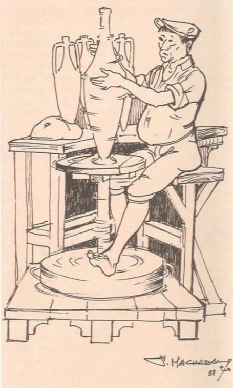
Um recordista de apneia
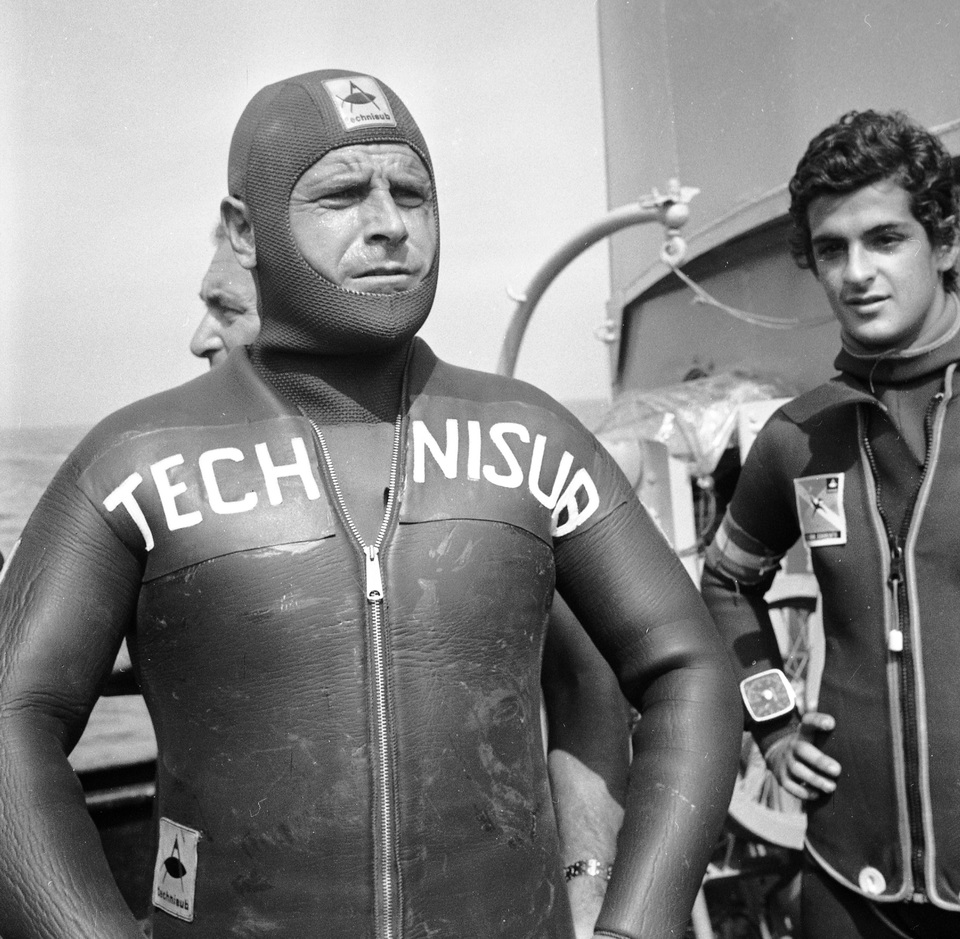
Os textos em inglês descrevem Santarelli como empresário rico. Esse retrato parece incompleto. As tabelas de recordes de apneia registram um Amerigo Santarelli que, em 1960, chegou a 43 metros no Rio de Janeiro, 44 no Circeo e 46 em Santa Margherita, em disputa pelo recorde mundial com o italiano Enzo Maiorca, que terminou o ano com 49 metros.
Nenhuma fonte liga explicitamente o recordista ao homem das ânforas. O nome, o Rio, a descrição como "mergulhador veterano" e a presença na Itália em 1960 tornam a identificação muito provável, embora não certa. Se confirmada, ela muda o personagem: em vez de um colecionador excêntrico, trata-se de um dos melhores mergulhadores do mundo em sua época.
A conta que não fecha
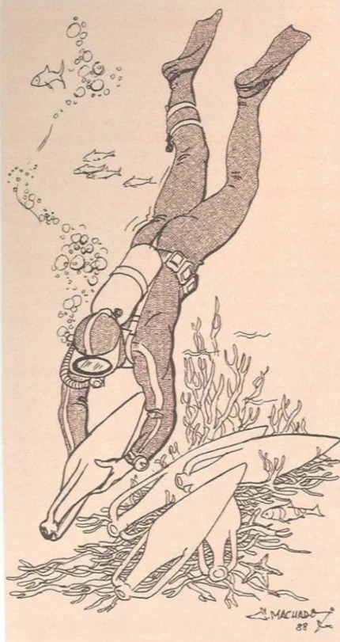
Essa foi a versão que agradou aos céticos, porque encerrava o assunto. Ela depende, porém, da palavra de uma só pessoa, e os detalhes variam de um relato para outro: 15, 16 ou 18 jarras, inspiradas em peças da Sicília ou do Mediterrâneo em geral.
O problema maior é numérico. Santarelli explica no máximo 18 jarras inteiras, enquanto Marx falava em partes de cerca de 200. Se os números de Marx estiverem certos, as réplicas não bastam. Se estiverem inflados, a explicação volta a ser suficiente. Nenhuma contagem independente foi feita. Permanece ainda uma dúvida: por que um mergulhador desse nível teria recuperado apenas quatro das próprias jarras?
O capitão português A. Estácio dos Reis, autor do artigo de 1989, incluiu o caso numa lista de falsificações, mas não o deu por encerrado. Perguntou se as peças do fundo eram de fato as de Santarelli e se o oleiro confirmava a encomenda. Para o autor, só a análise do barro poderia encerrar o assunto.
O Que as Peças Dizem
Datas, argila, coral, localização e as hipóteses além de "romanas ou falsas".
Séculos de diferença
Se as peças fossem a carga de um único navio, deveriam ter idade semelhante. As datas propostas ao longo dos anos variam de 500 anos antes de Cristo a 500 depois, um intervalo de dez séculos.
Entre a data mais antiga e a opinião de Will há de 400 a 500 anos. A explicação mais simples é a má qualidade dos dados. Nenhum laudo original foi localizado. O ponto é importante porque a termoluminescência mede a última queima da cerâmica: um resultado antigo confiável derrubaria a tese da réplica para aquela peça. É o dado mais perigoso para Santarelli, e justamente o que não pode ser conferido.
- Século II a.C. Data divulgada em 1982, sem base informada.
- Cerca de 19 a.C. Termoluminescência em Londres, conhecida apenas por relatos.
- Cerca de 2.000 anos, com margem de 140. Radiocarbono citado por Jett.
- Século III d.C. Opinião de Will, baseada em perfil, parede fina, borda e aspecto do barro.
- Cerca de 500 d.C. Carbono nas incrustações, também citado por Jett.
O que Elizabeth Will afirmou
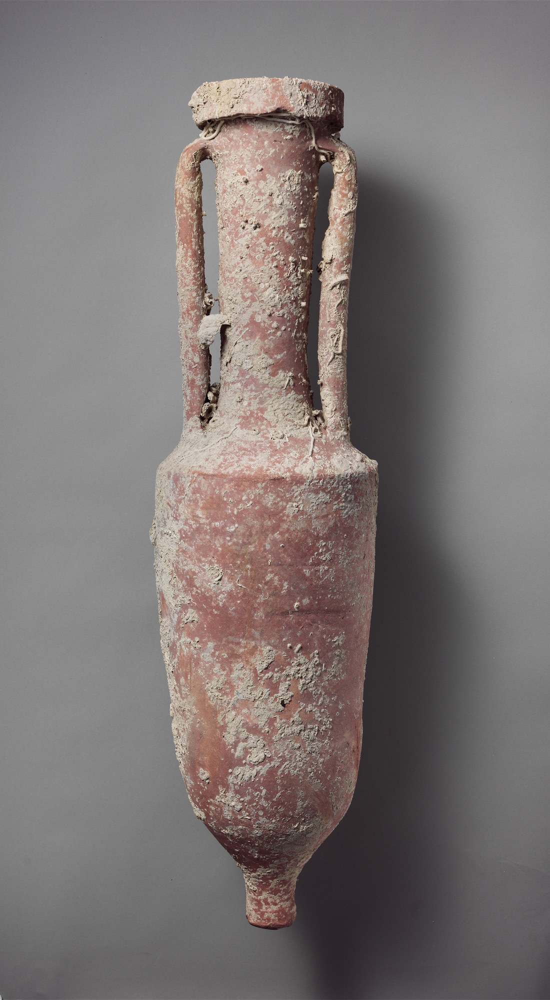
Will é a voz mais qualificada do caso, e por isso suas palavras exigem leitura atenta. Em 2007, ela ainda dizia não ver razão para considerar as peças modernas e que, a olho, o barro parecia norte-africano do século III. Também relatou que nenhum laboratório consultado tinha argila de composição semelhante. Sua posição se apoiava em forma e impressão visual. Ela nunca afirmou ter provado a origem.
Há ainda um problema cronológico. Os fornos documentados de Kouass, escavados por Michel Ponsich e revistos por Fernando López Pardo, funcionaram do século V ao século I a.C., e a região teve depois salgas de peixe romanas. As "versões tardias" do século III d.C. mencionadas por Will ficam cerca de 300 anos depois do fim desses fornos. Ela pode ter se referido a uma família regional de formas, mas seu argumento completo não foi consultado. A frase "fabricadas em Kouass", muito repetida, vai além do que ela afirmou.
Dois argumentos frágeis
O argumento do coral serve aos dois lados, já que Santarelli diz ter lançado as jarras à água justamente para envelhecê-las. Cracas crescem depressa, e 21 anos sob a água cobririam bem uma jarra. Coral duro cimentado à rocha, se a descrição estiver correta, seria outro caso, mas faltam dados de longo prazo para decidir.
A localização também é incerta. Os relatos mencionam a Ilha do Governador, a Pedra do Xaréu e um ponto a 15 quilômetros da costa, com profundidade de 23 a 30 metros. A Guanabara tem cerca de 28 quilômetros de largura e profundidade média de 5,7 metros, e profundidades como essas parecem típicas do canal central. A Pedra do Xaréu não foi localizada em carta náutica, o que ainda precisa ser verificado. Os relatos podem misturar dois pontos, e Teixeira não quis revelar onde mergulhou.
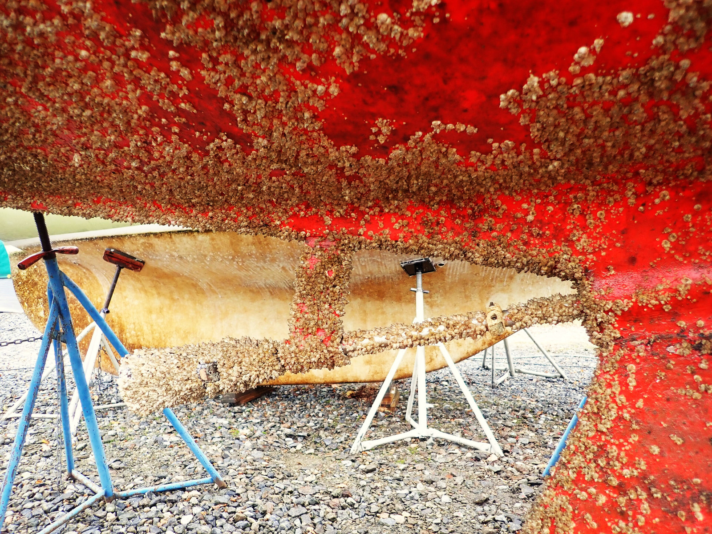
Além de romanas ou falsas
O debate costuma se limitar a duas opções, mas há pelo menos cinco.
- Naufrágio romano. Exigiria casco e contexto publicados, o que nunca apareceu.
- Réplicas de 1961. Explicam poucas peças e dependem de um único testemunho.
- Ânforas verdadeiras trazidas em tempos modernos. Por colecionadores ou como carga, foi a primeira explicação ouvida por Marx.
- Jarras ibéricas da época colonial. São parecidas com ânforas, embora as peças do Rio sejam descritas com duas asas, raras nas jarras do tráfico americano.
- Depósito de porto. A baía recebeu navios por séculos, e seu fundo acumula descartes e oferendas. Um relato diz que um pescador quebrava as jarras por achar que eram de macumba.
As hipóteses não se excluem. Parte das peças pode ser de Santarelli, parte colonial e parte de origem desconhecida. O erro mais comum é tratar "as ânforas" como um conjunto único.
O caso paralelo das Canárias
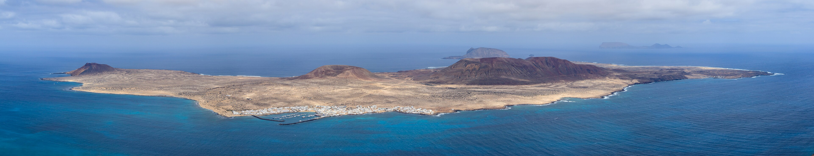
O melhor paralelo vem do outro lado do Atlântico e não aparece nos textos consultados sobre a Guanabara. Em 1964, uma ânfora foi achada no mar junto à ilha de La Graciosa, nas Canárias, e outras surgiram depois. O debate seguiu roteiro parecido: entusiasmo com os romanos, uma manchete de 1980 dizendo que as peças eram do século XVI e levavam azeitonas à América, e um especialista admitindo que podiam ser do século III ou do XIX. Algumas ânforas sumiram de um órgão público, e outras saíram ilegalmente com turistas.
A diferença está na continuidade da pesquisa. Em 1996, Gabriel Escribano e Alfredo Mederos revisaram o conjunto, e um estudo de 2024 na PNAS concluiu que os romanos provavelmente chegaram às ilhas por volta do século I a.C. No caso da Guanabara, a investigação parou em 1983.
Roma poderia ter chegado ao Rio?
A hipótese não é impossível. Roma manteve comércio intenso pela costa atlântica da Europa e chegou às Canárias, e o arqueólogo Richard Callaghan observa que derivas pelo Atlântico não podem ser descartadas em períodos muito longos. O império, porém, nunca teve vocação atlântica, e a possibilidade de um acidente não demonstra que ele ocorreu. No caso do Rio, o navio ainda precisaria atravessar o oceano e entrar por uma boca de cerca de 1,5 quilômetro antes de se chocar com uma rocha dentro da baía.
O padrão de prova é alto. A presença nórdica nas Américas foi aceita porque existe um sítio em terra, L'Anse aux Meadows, com estruturas e data precisa. Um estudo de 40 relatos de moedas antigas nas Américas não encontrou nenhum caso que servisse de prova.
Mesmo um naufrágio romano real teria sido um acidente sem consequência histórica. Não mudaria quem "descobriu" o Brasil, território habitado havia milhares de anos.
O Que Falta
As peças perdidas, os laudos ausentes e o que se pode afirmar hoje.
Em 1989, a Revista da Armada defendeu a análise do barro. Trinta e sete anos depois, não há sinal de que isso tenha sido feito, embora boa parte da questão pudesse ser resolvida com meios simples.
O primeiro passo seria localizar as peças. As duas jarras de Teixeira foram entregues à Marinha, Will mantinha um fragmento até pelo menos 2007, e um blog afirma que as ânforas desapareceram, sem confirmação. Com uma amostra, a termoluminescência e a análise da argila indicariam se a peça foi queimada em 1961 ou na Antiguidade e de onde veio o barro. Depois, seria preciso encontrar os laudos de Londres e os relatórios de Edgerton, consultar as reportagens de época e localizar o sítio com carta náutica e sonar.
Até lá, o que se pode afirmar é pouco, mas sólido. Existem jarras na baía de Guanabara desde pelo menos os anos 1970. Marx anunciou um naufrágio que nunca foi demonstrado. A Marinha tinha um motivo concreto para afastá-lo do Brasil. Santarelli ofereceu uma explicação que nunca foi verificada. As jarras, no meio dessa disputa, seguem sem o exame que poderia resolver o caso.
Fontes principais
- Margolis, Mac. Ancient voyagers to the New World. Christian Science Monitor, 8 out. 1982.
- Reis, A. Estácio dos. As ânforas encontradas na baía da Guanabara. Revista da Armada, 1989.
- Rambelli, Gilson. Entre o uso social e o abuso comercial. História, v. 27, n. 2, 2008.
- Rambelli, Gilson. O abandono do patrimônio arqueológico subaquático no Brasil. Revista do MAE, n. 7, 1997.
- Rambelli, Gilson; Funari, Pedro Paulo. Patrimonio cultural subacuático en Brasil. Memorias, 2007.
- Agência de Patrimônio Cultural dos Países Baixos. Registro do naufrágio Utrecht.
- López Pardo, Fernando. Nota sobre las ánforas II y III de Kuass. Gerión, v. 33, 2015.
- Escribano Cobo, Gabriel; Mederos Martín, Alfredo. ¿Ánforas romanas en las islas Canarias? Tabona, n. 9, 1996.
- Santana, Jonathan et al. The chronology of the human colonization of the Canary Islands. PNAS, 2024.
- Joffily, Geraldo. A "inscrição fenícia da Paraíba". Revista de História, 1973.
- Jett, Stephen C. Ancient Ocean Crossings. University of Alabama Press, 2017 (consultado em excerto).
- Simons, Marlise. Underwater exploring is banned in Brazil. New York Times, 25 jun. 1985 (consultado por trechos e recontos).
Créditos das imagens
Imagens do Wikimedia Commons, do Metropolitan Museum of Art e da Revista da Armada, algumas redimensionadas ou recortadas.
- Rio de Janeiro visto do Pão de Açúcar · Wilfredor · CC0
- Robert Marx e Elisha Linder · Álbum Omri Linder e Família · CC BY-SA 3.0
- Ânfora do naufrágio de Alonissos · Elpida Hadjidaki · CC BY-SA 4.0
- Ilha Fiscal · Halley Pacheco de Oliveira · CC BY-SA 3.0
- Vista aérea do Leblon e da Pedra da Gávea · Chensiyuan · CC BY-SA 4.0
- Timão do naufrágio do cargueiro E. Russ · Juha Flinkman, SubZone OY · CC BY-SA 4.0
- Vista de Olinda · Frans Post · Domínio público
- O oleiro e O mergulhador, desenhos · J. Machado, 1988 · Revista da Armada, 1989
- Enzo Maiorca em Sorrento, 1974 · ANSA · Domínio público
- Ânfora romana de vinho · The Metropolitan Museum of Art · Domínio público
- Cracas em casco de barco · Sinikka Halme · CC BY-SA 4.0
- La Graciosa, nas Canárias · H. Zell · CC BY-SA 3.0
- Silhuetas de nórdicos em L'Anse aux Meadows · Gordon Leggett · CC BY-SA 4.0


.jpg){kind=link}